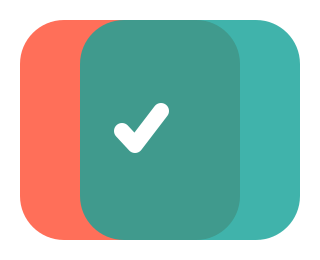

Accueil > Trajets sans autoroute > Paris Nice
En évitant l'autoroute, vous économisez environ 111 € sur la route (péages et électricité), pour environ 7 h 05 de trajet en plus. Les routes les plus empruntées sont la N202 (65 km), la D2076 (62 km), la N7 (57 km).
Par l'autoroute
Parcours découverte
Estimations pour un véhicule électrique consommant 18 kWh/100 km, avec l'électricité à 0,45 €/kWh, péage à 0,10 €/km sur les tronçons à péage. Montants indicatifs, mis à jour le 15 octobre 2026.
Jour 1 : Paris à Aubigny-sur-Nère
185 km, 3 h 14 de conduite
Recharge
Journée de 185 km : une autonomie de 300 km suffit sans recharge en route. Une recharge pendant le déjeuner reste un confort.
Recharger près du déjeuner
Aucune borne trouvée près du milieu de la journée.
Recharger à Aubigny-sur-Nère
À voir en chemin
 Château de la RivièreChâteauCarte
Château de la RivièreChâteauCarteLe château de la Rivière est un château du XVIe siècle situé à Châtenoy, dans le département du Loiret en région Centre-Val de Loire.
📍 La Rivère, Châtenoytexte : Wikipédia (CC BY-SA), image : Wikimedia Château de Sully-sur-LoireChâteauSiteCarte
Château de Sully-sur-LoireChâteauSiteCarteLe château de Sully-sur-Loire est un château français situé au bord de la Loire, dans la commune française de Sully-sur-Loire, le département du Loiret et la région Centre-Val de Loire.
📍 Promenade des Douves, Sully-sur-Loire🕒 Jan: fermé ; Feb-Apr: mar-ven 13:30-17:30 ; sam-dim 10:00-12:00, 13:30-17:30 ; Oct-Dec: mar-ven 13:30-17:30…📞 +33 2 38 36 36 86texte : Wikipédia (CC BY-SA), image : Wikimedia Château de BlancafortChâteauSiteCarte
Château de BlancafortChâteauSiteCarteLe château de Blancafort se situe au cœur du village de Blancafort (Cher), dans une région du Berry que l'on nomme Pays-Fort.
📍 Rue de l'Abbé Morin, Blancafort🕒 May-Jun lun,mer-dim 10:00-12:00,14:00-18:30 ; May-Jun lun,mer-dim 10:00-19:00📞 +33 2 48 58 60 11texte : Wikipédia (CC BY-SA), image : Wikimedia Château de Saint-MaurChâteauCarte
Château de Saint-MaurChâteauCarteLe château de Saint-Maur est un château situé à Argent-sur-Sauldre, dans le département du Cher, en région Centre-Val de Loire.
📍 Le Château, Argent-sur-Sauldretexte : Wikipédia (CC BY-SA), image : Wikimedia
Où déjeuner
- 🍽️OléoneCuisine française📍 29 Rue Amiral Gourdon, Pithiviers🕒 lun-mer 11:30-23:00Carte
- 🥩Steak HouseGrillades📍 D 921, PithiviersCarte
- 🍽️La Scala📍 Faubourg de Paris, Pithiviers📞 +33 2 38 30 85 00SiteCarte
Où dîner à Aubigny-sur-Nère
- 🍽️La Chaumière - Hôtel RestaurantCuisine française📍 Rue Paul Lasnier, Aubigny-sur-Nère🕒 mar 19:00-23:00 ; mar-sam 12:00-14:00,19:00-23:00 ; dim 12:00-14:00terrasse, accessible en fauteuil roulant📞 +33 2 48 58 04 01SiteCarte
- 🍽️L'EntrepotesCuisine fish and chips📍 Rue du Moulin d'En Haut, Aubigny-sur-Nère🕒 mar-sam 12:00-14:30,19:00-22:30terrasse, à emporter, accessible en fauteuil roulant📞 +33 2 48 58 86 30Carte
- 🍽️Le Bien AllerCuisine régionale📍 Rue des Dames, Aubigny-sur-Nère🕒 lun,ven-dim 12:00-14:00,19:00-21:00terrasse, accessible en fauteuil roulant📞 +33 2 48 58 03 92SiteCarte
Dormir à Aubigny-sur-Nère
Chercher un hôtel à Aubigny-sur-NèreJour 2 : Aubigny-sur-Nère à Roanne
240 km, 3 h 33 de conduite
Recharge
Journée de 240 km : une autonomie de 300 km suffit sans recharge en route. Une recharge pendant le déjeuner reste un confort.
Recharger près du déjeuner
Recharger à Roanne
À voir en chemin
 Château de Menetou-SalonChâteauSiteCarte
Château de Menetou-SalonChâteauSiteCarteLe château de Menetou-Salon, situé au 2, rue Prince Auguste d'Arenberg à Menetou-Salon (Cher), est une ancienne forteresse du XIIe siècle entièrement remaniée et agrandie dans un style néo-gothique au XIXe siècle par son…
📍 Rue Prince Auguste d'Arenberg, Menetou-Salontexte : Wikipédia (CC BY-SA), image : Wikimedia Restes du donjon de JouyChâteauCarte
Restes du donjon de JouyChâteauCarteLe donjon de Jouy est un monument de l'ancienne ville de Jouy, aujourd'hui intégrée à la ville de Sancoins dans le département du Cher.
📍 D 41, Sancoinstexte : Wikipédia (CC BY-SA), image : Wikimedia Château de Saint-AugustinChâteauCarte
Château de Saint-AugustinChâteauCarteLe château de Saint-Augustin est un édifice situé sur la commune de Château-sur-Allier (France).
📍 D 594, Château-sur-Alliertexte : Wikipédia (CC BY-SA), image : Wikimedia Musée Anne de BeaujeuMuséeSiteCarte
Musée Anne de BeaujeuMuséeSiteCarteLe pavillon d'Anne-de-Beaujeu est une aile du château des ducs de Bourbon, situé à Moulins dans le département de l'Allier et la région Auvergne.
📍 Rue des Fausses Braies, Moulins🕒 Sep-Jun: mar-sam 10:00-12:00,14:00-18:00 ; Sep-Jun: dim,jours fériés 14:00-18:00 ; Sep-Jun: lun fermé ; Jul…entrée payante📞 +33 4 70 20 48 47texte : Wikipédia (CC BY-SA), image : Wikimedia
Où déjeuner
- 🥙Le soleil de TunisKebab📍 13, Moulins🕒 sam-jeu 11:00-14:30,17:00-23:00 ; ven 17:00-23:00accessible en fauteuil roulant📞 +33 6 20 71 87 91Carte
- 🍝La Dolce VitaCuisine italienne📍 19 Rue Datas, Moulins🕒 mar-dim 10:00-14:00,16:30-22:00options végétariennes, accessible en fauteuil roulant📞 +33 9 81 49 43 77SiteCarte
- 🦐Le CharlieCuisine american📍 59 Avenue de la Libération, Moulins🕒 lun-dim 19:00-00:00📞 +33470464650SiteCarte
Où dîner à Roanne
- 🍝Ristorante Del ArteCuisine italienne📍 68 Rue Alfred de Musset, Mably🕒 lun-jeu 11:30-14:30, 18:30-22:30 ; ven-sam 11:30-14:30, 18:30-23:00 ; dim 11:30-14:30, 18:30-22:30accessible en fauteuil roulant📞 +33 4 77 78 18 90SiteCarte
- 🍣Sushi RollCuisine japonaiseCarte
Menu : https://sushi-roll.fr/commander
📍 23 Rue Alfred de Musset, Mably📞 +33 4 77 60 35 37 - 🥩La BoucherieGrillades📍 Rue Édouard Branly, MablyCarte
Dormir à Roanne
Chercher un hôtel à RoanneJour 3 : Roanne à Portes-lès-Valence
194 km, 3 h 11 de conduite
Recharge
Journée de 194 km : une autonomie de 300 km suffit sans recharge en route. Une recharge pendant le déjeuner reste un confort.
Recharger près du déjeuner
À voir en chemin
 Commanderie de VerrièresChâteauCarte
Commanderie de VerrièresChâteauCarteLa commanderie de Verrières est une commanderie hospitalière située dans le département de la Loire à environ 30 km au nord de Montbrison, sur la commune de Saint-Germain-Laval.
📍 Chemin des Verrières, Saint-Germain-Lavaltexte : Wikipédia (CC BY-SA), image : Wikimedia Musée du tissage et de la soierieMuséeSiteCarte
Musée du tissage et de la soierieMuséeSiteCarteLe Musée du tissage et de la soierie - espace Pierre Berchoux est un musée français situé dans la commune de Bussières, département de la Loire, en région Auvergne-Rhône-Alpes.
📍 Impasse Branly, Bussières🕒 Apr-Jun,Sep-Oct sam,dim 15:00-18:00 ; Jul-Aug mar-dim 15:00-18:00entrée payante📞 +33 4 77 27 33 95texte : Wikipédia (CC BY-SA), image : Wikimedia Lieu de MémoireMuséeSiteCarte
Lieu de MémoireMuséeSiteCarteLe lieu de mémoire au Chambon-sur-Lignon est un espace mémoriel situé au Chambon-sur-Lignon en Haute-Loire (France). Il est consacré à l’histoire des Justes et des résistances pendant la Seconde Guerre mondiale.
📍 23 Route du Mazet, Le Chambon-sur-Lignonentrée payantetexte : Wikipédia (CC BY-SA), image : Wikimedia Château de DésaignesMuséeSiteCarte
Château de DésaignesMuséeSiteCarteLe château de Désaignes est un édifice situé à Désaignes, en France.
📍 Rue des Remparts, Désaignes🕒 Mar-Jun sam-dim 14:00-18:00 ; Jul-Aug mar-dim 14:00-18:00 ; Sep-Oct sam-dim 14:00-18:00 ; Nov-Apr fermétexte : Wikipédia (CC BY-SA), image : Wikimedia
Où déjeuner
- 🍽️Le QGCuisine française📍 20 Place Moulin Prugnat, Saint-Just-MalmontSiteCarte
- 🍽️Dine Ami TableCuisine françaiseSiteCarte
Dimanche sur réservation à partir de 20 personnes.
📍 105 Avenue de la Semène, La Séauve-sur-Semène🕒 lun-mer 05:30-15:00 ; jeu 05:30-20:00 ; ven 05:30-01:00 ; sam 08:00-01:00terrasse📞 +33 4 71611188 - 🍽️La Table Des ChampsCuisine local📍 Route de Saint-Genest-Malifaux, Saint-Romain-les-Atheux🕒 lun,ven 19:30-23:00 ; sam-dim 12:15-15:00,19:30-23:00terrasse, accessible en fauteuil roulant, réservation conseillée📞 +33698538907SiteCarte
Où dîner à Portes-lès-Valence
- 🍽️La TreilleCuisine française📍 21 Quai Jean Jaurès, La Voulte-sur-Rhône🕒 lun fermé ; mar 08:30-14:00,19:30-22:00 ; mer 08:30-14:00 ; jeu 08:30-14:00,19:30-22:00 ; ven 08:30-14:00,1…📞 +33475624231SiteCarte
- 🍔L'EntracteBurgers📍 Rue Rampon, La Voulte-sur-Rhône🕒 mar-dim 00:00-24:00terrasse📞 +33 475577037Carte
- 🍽️Bistrot de Saint Laurent📍 101 Place Centrale, Saint-Laurent-du-Pape🕒 mar 11:00-15:00 ; jeu-sam 11:00-15:00, 18:00-22:00 ; dim 10:00-22:00📞 +33475631639SiteCarte
Dormir à Portes-lès-Valence
Chercher un hôtel à Portes-lès-ValenceJour 4 : Portes-lès-Valence à Sisteron
155 km, 2 h 47 de conduite
Recharge
Journée de 155 km : une autonomie de 300 km suffit sans recharge en route. Une recharge pendant le déjeuner reste un confort.
Recharger à Sisteron
À voir en chemin
 ChâteauChâteau📍 Montée du Nonante No, Chabrillanimage : WikimediaCarte
ChâteauChâteau📍 Montée du Nonante No, Chabrillanimage : WikimediaCarte Tour de CrestChâteauSiteCarte
Tour de CrestChâteauSiteCarteLa tour de Crest est l'ancien donjon du château médiéval de Crest dans la Drôme (Auvergne-Rhône-Alpes). Elle s'élève à 52 mètres de hauteur.
📍 Chemin des Remparts, Crestentrée payante📞 +33 4 75 25 32 53texte : Wikipédia (CC BY-SA), image : Wikimedia Maison de la Céramique du Pays de DieulefitMusée📍 Rue des Reymonds, Dieulefitentrée payante📞 +33 4 75 50 20 98image : WikimediaCarte
Maison de la Céramique du Pays de DieulefitMusée📍 Rue des Reymonds, Dieulefitentrée payante📞 +33 4 75 50 20 98image : WikimediaCarte Citadelle de SisteronChâteauSiteCarte
Citadelle de SisteronChâteauSiteCarteÀ 500 m d'altitude, la citadelle de Sisteron surplombe la ville de Sisteron — située dans un passage entre le Dauphiné et la Provence — et la Durance.
📍 Allée du souvenir français, Sisteron🕒 Mar 21-Mar 31,Oct 16-Oct 31: lun-dim,jours fériés 09:00-18:00 ; Apr-May,Oct 01-Oct 15: lun-dim,jours fériés…entrée payante📞 +33 492612757texte : Wikipédia (CC BY-SA), image : Wikimedia
Où déjeuner
- 🍽️Snack bar La PiboureCuisine régionale📍 785 Route de Nyons, La Motte-Chalancon🕒 Jul-Aug lun-dim 08:00-22:00+ ; Apr-Jun,Sep,Dec ven 19:00-22:00+ ; Apr-Jun,Sep,Dec sam,dim 12:00-14:00+,19:0…terrasse, à emporter, options végétariennes, accessible en fauteuil roulant📞 +33 4 75 27 22 84SiteCarte
- 🍽️La FincaCuisine française📍 451 Grande Rue, La Motte-Chalancon🕒 jours fériés,mar-dim 19:00-22:00terrasse, options végétariennes, accessible en fauteuil roulant📞 +33 4 75 26 26 82Carte
- 🍽️Auberge de la vallée de l'Oule📍 Rue de la Provencale, Cornillon-sur-l'OuleCarte
Où dîner à Sisteron
- 🍽️Au RomarinCuisine française📍 103 Rue Saunerie, Sisteron🕒 lun,mer-dim 12:00-22:00options végétariennes📞 +33 4 92 34 88 04SiteCarte
- 🥞Crêperie l'AkèneCrêperie📍 67 Rue Saunerie, Sisteron🕒 mer-dim 12:00-13:30,19:00-20:30terrasse, options végétariennes, accessible en fauteuil roulant, réservation conseillée📞 +33 4 92 61 20 39SiteCarte
- 🍽️Le BraseroCuisine pâtes📍 27 Rue Deleuze, Sisteron🕒 lun-mar,jeu-dim 11:00-15:00,19:00-23:00 ; mer ferméterrasse, options végétariennes, options véganes, accessible en fauteuil roulant, réservation conseillée📞 +33 4 92 61 56 79SiteCarte
Dormir à Sisteron
Chercher un hôtel à SisteronJour 5 : Sisteron à Nice
180 km, 3 h 24 de conduite
Recharge
Journée de 180 km : une autonomie de 300 km suffit sans recharge en route. Une recharge pendant le déjeuner reste un confort.
Recharger près du déjeuner
Recharger à Nice
À voir en chemin
 Château de ClumancChâteauCarte
Château de ClumancChâteauCarteLe château de Clumanc est un édifice situé à Clumanc, en France.
📍 Impasse du Hameau de Ville, Clumanctexte : Wikipédia (CC BY-SA), image : Wikimedia- 🏺Dolmen des Pierres BlanchesPatrimoineCarte
Le dolmen des Pierres Blanches est situé à Castellane, dans le département français des Alpes-de-Haute-Provence.
📍 Route de Blaron, Castellanetexte : Wikipédia (CC BY-SA)  Château de GiletteChâteauCarte
Château de GiletteChâteauCarteLe château de Gilette est un château français du XIIe siècle édifié par une branche de la famille de Vintimille à Gilette. Le château est inscrit au titre des monuments historiques par arrêté du 28 juin 1933.
📍 Allée Joseph Ferran, Gilettetexte : Wikipédia (CC BY-SA), image : Wikimedia Musée National du SportMuséeSiteCarte
Musée National du SportMuséeSiteCarteLe musée national du Sport, créé en 1963, est un musée français traitant du phénomène sportif dans sa globalité. Ses collections comptent plus 45 000 objets et 400 000 documents qui retracent l'histoire du sport dès ses origines.
📍 Nice🕒 May-Oct mar-dim,jours fériés 10:00-18:00 ; Nov-Apr mar-dim,jours fériés 11:00-17:00entrée payante, accessible en fauteuil roulant📞 +33 4 89 22 44 00texte : Wikipédia (CC BY-SA), image : Wikimedia
Où déjeuner
- 🍽️Epicerie La MaritzaCuisine régionale📍 Rue de la Place, Ascrosà emporter📞 +33 4 93 05 69 42SiteCarte
- 🍽️L'Auberge de La PenneCuisine régionale📍 Escalier du Pontis, La Penne🕒 "Sur réservation"à emporter📞 +33 4 93 05 09 81Carte
- 🍽️Table d'hôtes du RoussetCuisine régionale📍 163 Route de la Combe, Ascros📞 +33 6 60 36 05 38Carte
Où dîner à Nice
- 🍽️La GauloiseCuisine fish📍 Avenue Malausséna, Nice🕒 lun fermé ; mar-sam 09:00-23:00 ; dim 09:00-15:00terrasse📞 +33 4 93 62 07 90SiteCarte
- 🍽️À la Table Du MarcheCuisine française📍 Boulevard Joseph Garnier, Nice🕒 lun-mer 12:00-14:30 ; jeu-sam 12:00-14:30,19:30-22:30 ; dim ferméaccessible en fauteuil roulant📞 +33 4 93 78 43 77Carte
- 🍽️L’AuthentiquePizzeria📍 Boulevard Auguste Raynaud, Nice🕒 mar-dim 18:00-22:00📞 +33 7 85 28 21 39SiteCarte
Dormir à Nice
Chercher un hôtel à NiceQuestions fréquentes
Quelle est la distance de Paris à Nice sans autoroute ?
Environ 953 km, soit 16 h 09 de conduite et 5 jours à raison d'environ 4 h par jour. Par l'autoroute, le trajet fait 932 km en 9 h 05.
Combien coûte le trajet de Paris à Nice ?
Estimations pour un véhicule électrique consommant 18 kWh/100 km, avec l'électricité à 0,45 €/kWh, la route coûte environ 69 € sans autoroute contre 180 € par l'autoroute (péages compris). Les repas, les visites et l'hébergement ne sont pas inclus.
Où s'arrêter entre Paris et Nice ?
Les étapes proposées sont : Aubigny-sur-Nère, Roanne, Portes-lès-Valence, Sisteron, Nice. Pour chaque journée, la page indique des lieux à visiter, des restaurants pour le déjeuner et le dîner, et un lien pour réserver une nuit.
Où recharger une voiture électrique de Paris à Nice ?
Pour chaque journée, la page liste des bornes de recharge près du lieu de déjeuner et dans la ville d'étape, avec la puissance quand elle est connue. Vérifiez la disponibilité dans l'application de votre réseau de recharge.
Autres trajets
- Paris Nice sans autoroute
- Paris Menton sans autoroute
- Strasbourg Nice sans autoroute
- Paris Londres sans autoroute
- Paris Marseille sans autoroute
- Paris Bordeaux sans autoroute
- Paris Toulouse sans autoroute
- Paris Strasbourg sans autoroute
Les lieux et restaurants viennent d'OpenStreetMap et de Wikipédia : vérifiez les horaires avant de partir. Itinéraire calculé avec OpenRouteService, lieux via Geoapify, données © OpenStreetMap contributors.